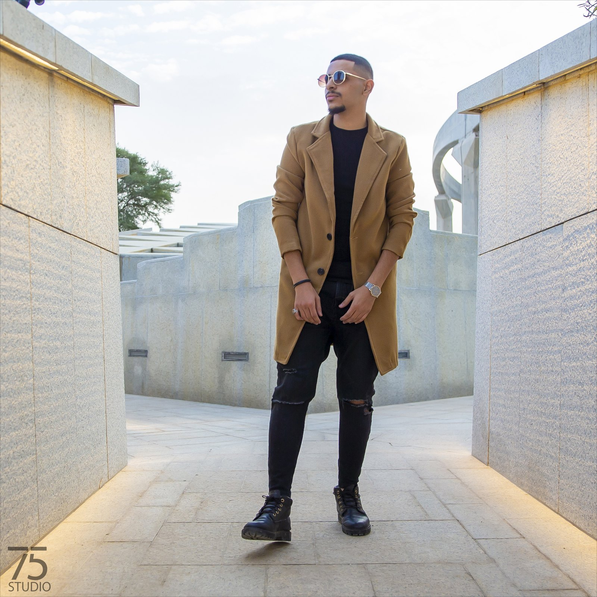

0%
لكل فكرة سيرة تستحق أن تُروى بصريًا
في "سيرة"، نؤمن أن الإعلام ليس مجرد محتوى، بل رسالة تُصنع بعناية لتصل وتؤثر. نحن مؤسسة إعلامية نسعى إلى تقديم حلول إبداعية ومحتوى احترافي يعكس هوية عملائنا ويعزز حضورهم في عالم سريع التغير.
نقدّم في "سيرة" خدمات إعلامية متكاملة تشمل صناعة المحتوى، إدارة المنصات الرقمية، التغطيات الإعلامية، والإنتاج المرئي، مع التركيز على الجودة والابتكار في كل ما نقدمه.
أن نكون من الجهات الرائدة في المجال الإعلامي من خلال تقديم محتوى مؤثر وحلول مبتكرة.
تمكين عملائنا من إيصال رسائلهم بطريقة احترافية تعكس هويتهم وتحقق لهم الانتشار والتأثير.
تصوير الإعلانات - تصوير الأفلام الوثائقية - التغطيات الإعلامية - المؤتمرات والمناسبات - التصوير الجوي - المونتاج
جلسات تصوير خاصة - تصوير المنتجات - تصوير الاحتفالات والمناسبات - التصوير المخصص
تصميم الهويات البصرية - تصميم الإعلانات - تصميم المنشورات - تصميم المطبوعات
التسويق الإلكتروني - صناعة المحتوى الإعلاني - إدارة حسابات التواصل الاجتماعي
نحوّل اللحظات إلى صور تنبض بالحياة، بعدسات احترافية ولمسات إبداعية تُبرز التفاصيل بدقة، لتعكس هوية علامتك وتترك أثرًا بصريًا لا يُنسى.





تغطيات ميدانية لأكبر البطولات المحلية والدولية، بتوقيت الحركة ولحظة الذروة.
من التخطيط إلى التنفيذ، نعمل على إنتاج فيديوهات احترافية تروي قصتك بأسلوب مبتكر، وتمنح علامتك حضورًا قويًا في عالم سريع التغير.
نفخر بالعمل معهم


نعمل حاليًا على تجهيز باقة من المنتجات الإبداعية الجديدة. ترقّبوا التفاصيل قريبًا.
استكشف قصتنا، خدماتنا، وأبرز أعمالنا في الملف التعريفي للشركة.
تحميل الملف التعريفي (PDF)